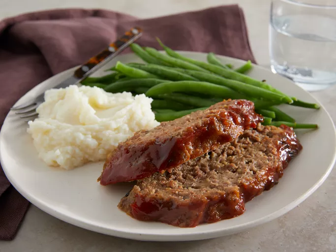

Melt-In-Your-Mouth Meatloaf

Description
Melt-In-Your-Mouth Meatloaf is a comforting classic that lives up to its name with every tender, flavorful bite.
This meatloaf is crafted from a blend of ground beef and pork, mixed with finely chopped onions, garlic, and a
medley of herbs and spices that infuse the meat with a rich, savory taste. The addition of breadcrumbs and eggs
ensures a moist and cohesive loaf, while a tangy glaze of ketchup, brown sugar, and a hint of mustard caramelizes
on top, adding a delectable sweetness. Baked to perfection, this meatloaf remains incredibly juicy and tender,
making it a heartwarming dish that pairs wonderfully with mashed potatoes, green beans, or a fresh salad for a satisfying, homestyle meal.
Ingredients
- Bread Crumbs
- Milk
- Two Whole Eggs
- Seasonings : dried minced onion, rubbed sage, and salt.
- Beef
- Mushrooms(Optional)
Steps
- Whisk together milk, bread crumbs, eggs, minced onion, salt, and sage. Stir in ground beef and mushrooms. Shape the mixture into a round loaf that will fit into your slow cooker.
- Place the formed loaf into your slow cooker and cook on low for five to six hours
- Whisk together the ketchup, brown sugar, mustard, and Worcestershire sauce. Open the slow cooker and pour the glaze evenly over the loaf. Re-cover and continue to cook on low for about 15 more minutes.
- Remove the meatloaf and transfer to a serving plate. Cover with foil for about 10 minutes to trap in the juices, then slice and serve.